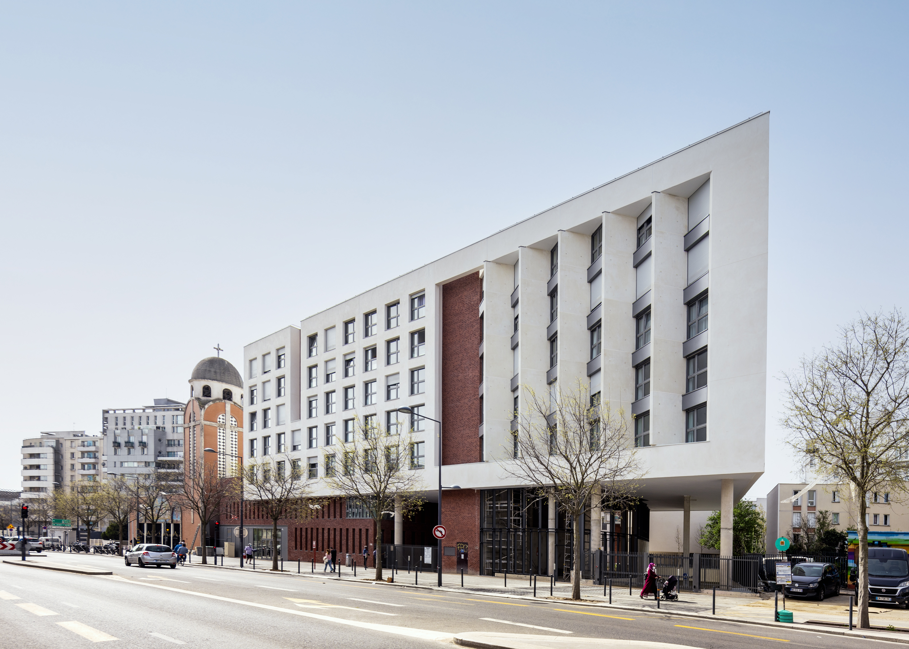
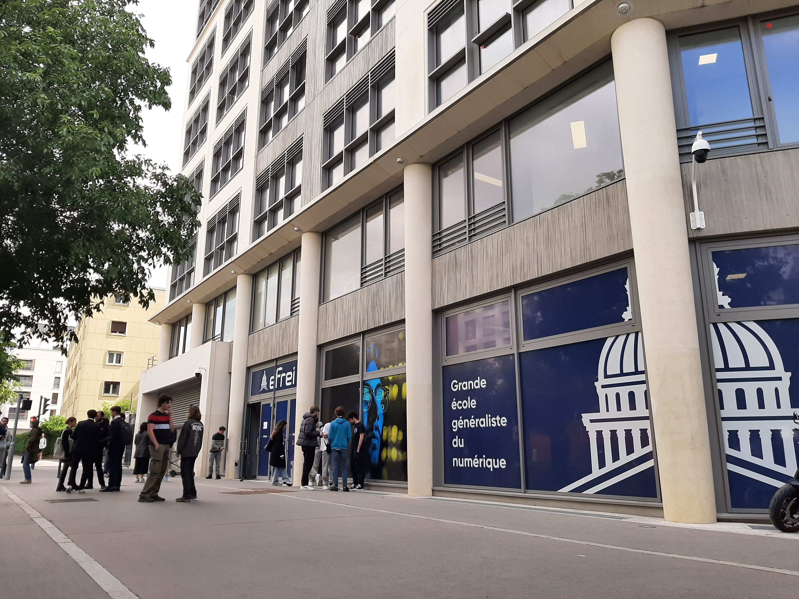
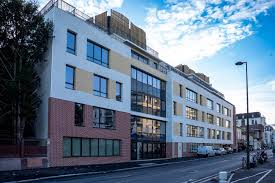
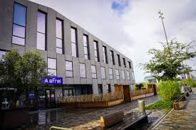

Campus de Paris
Campus de Bordeaux

Adresse : 30-32 Av. de la République,94800 Villejuif
Horaires : Lundi au vendredi : 7h30 à 20h (18h pour l'accueil)
C'est le plus grand des campus de Paris. Dans celui-ci, il y a les amphithéâtres, ainsi que les salles informatiques, l'I-lab et l'incubateur.

Adresse : 136 bis Bd Maxime Gorki,94800 Villejuif
Horaires : Lundi au vendredi : 7h30 à 20h (16h30 pour l'accueil)
Ce campus est dédié aux départements des langues vivantes. Donc aux modules de communication et d'anglais.

Adresse : 147 Bd Maxime Gorki,94800 Villejuif
Horaires : Lundi au vendredi : 7h30 à 20h (18h pour l'accueil)
Ce campus est principalement dedié aux différents cours. Il est presque entièrement constitué de salles de classes.

Adresse : 33 Av. de la République,94800 Villejuif
Horaires : Lundi au vendredi : 6h30 à 21h30
Le campus le plus récent et moderne. Ouvert en janvier 2026. Il propose de nouvelles salles de classes, ainsi que de nombreux espaces de détentes, avec une salle de sport et une salle de danse.
Adresse : 83 rue Lucien Faure,33000 Bordeaux
Horaires : Lundi au vendredi : 7h30 à 21h
Le campus de Bordeaux est un site complet, comprenant des espaces de travail, un foyer, un FabLab et plusieurs terrasses.

Veuillez venir à nos multiples journées portes ouvertes pour découvrir directement sur place, les différents campus.